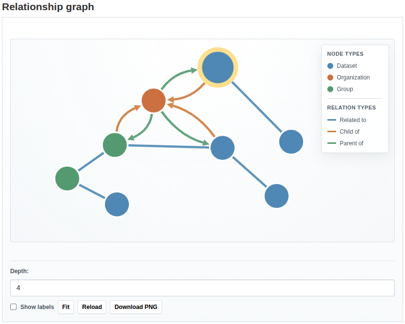

Graph
The optional graph plugin provides a Cytoscape-based visualization of relationships for datasets, groups, and organizations.
Enable the graph plugin
Enable the base relationship plugin together with relationship_graph:
ckan.plugins = ... relationship relationship_graph scheming_datasets ...
If you want the graph snippet to appear on scheming dataset pages, keep
relationship_graph before scheming_datasets so its template override wins.
Where it appears
The graph can always be embedded manually with the reusable snippet.
When the plugin is enabled and the dataset type has relationship-backed fields, the graph can also be rendered automatically as a separate section on the dataset page.
It is not rendered inside the additional_info metadata table.
Automatic insertion on dataset read pages is controlled by
ckanext.relationship.show_relationship_graph_on_dataset_read, which defaults to
true.
Automatic insertion on group About pages is controlled by
ckanext.relationship.show_relationship_graph_on_group_about, which defaults to
true. Automatic insertion on organization About pages is controlled by
ckanext.relationship.show_relationship_graph_on_organization_about, which
also defaults to true. The section is shown only if the current group or
organization has at least one relationship.

Graph snippet
The reusable snippet is:
relationship_graph/snippets/graph.html
Use this snippet when you want to embed the graph manually in a custom template.
Example:
{% snippet 'relationship_graph/snippets/graph.html',
object_id=pkg.id,
object_entity='package',
object_type=pkg.type,
depth=2,
max_nodes=80,
relation_types=['related_to'],
height='420px' %}
Supported parameters:
object_id(required)object_entity(defaultpackage)object_type(defaultdataset)depth(default1)max_nodes(default100)relation_types(optional list)height(default500px)show_controls(defaulttrue)show_labels(defaultfalse)layout(defaultcose)include_unresolved(defaulttrue)
Visualization behavior
- datasets, organizations, and groups use different node colors
- node types are shown in the legend with circular color markers
related_tois rendered as a single undirected edge between two nodeschild_ofandparent_ofare rendered as directed edges- relation types are distinguished by color and shown in the legend with line markers
- relation labels are shown on hover, not as permanent edge text
- node labels can be toggled on and off
- the current object is visually highlighted
Controls
When controls are enabled, the snippet provides:
- depth selection
- fit and reload actions
- PNG download of the current graph
- a label visibility toggle
API
The plugin also registers:
- the
relationship_graphaction - the
/api/2/util/relationships/graphJSON endpoint
See Actions and API for the full request and response contract.